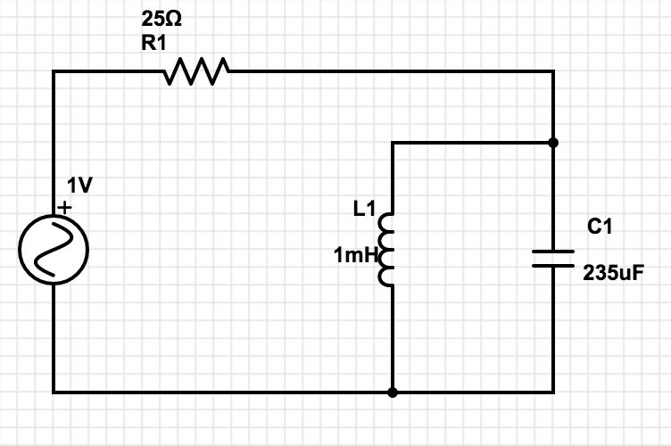
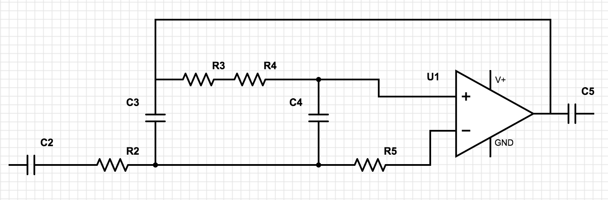
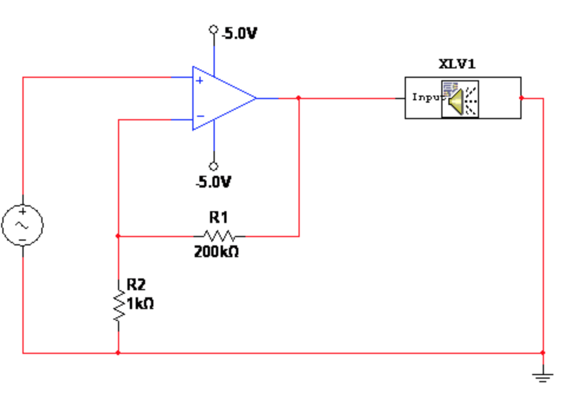
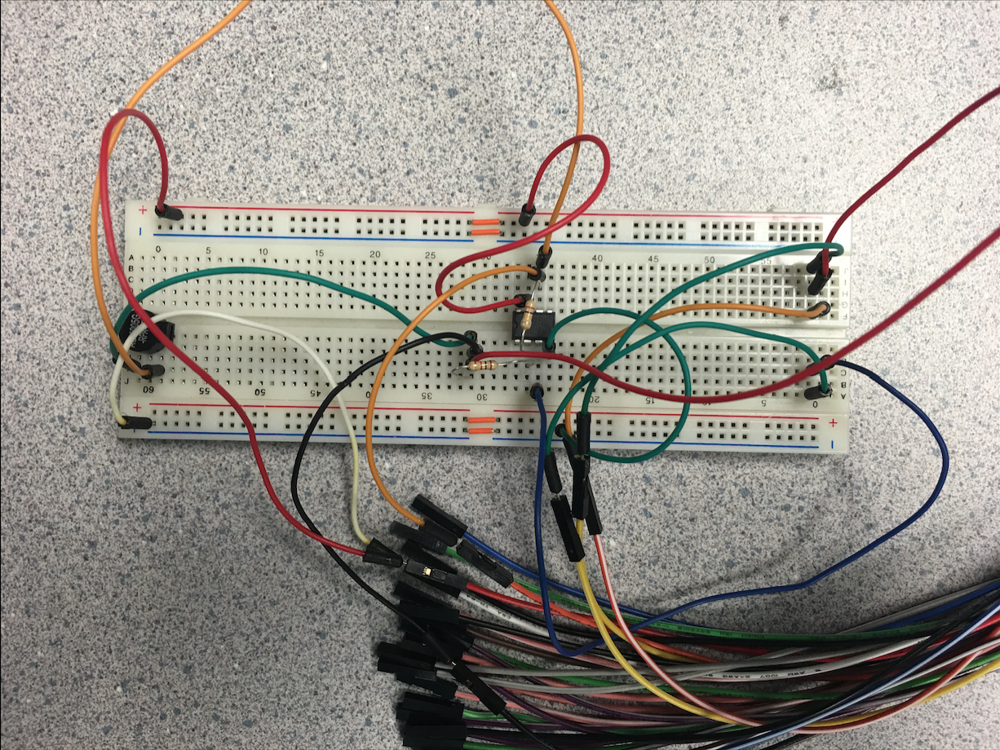
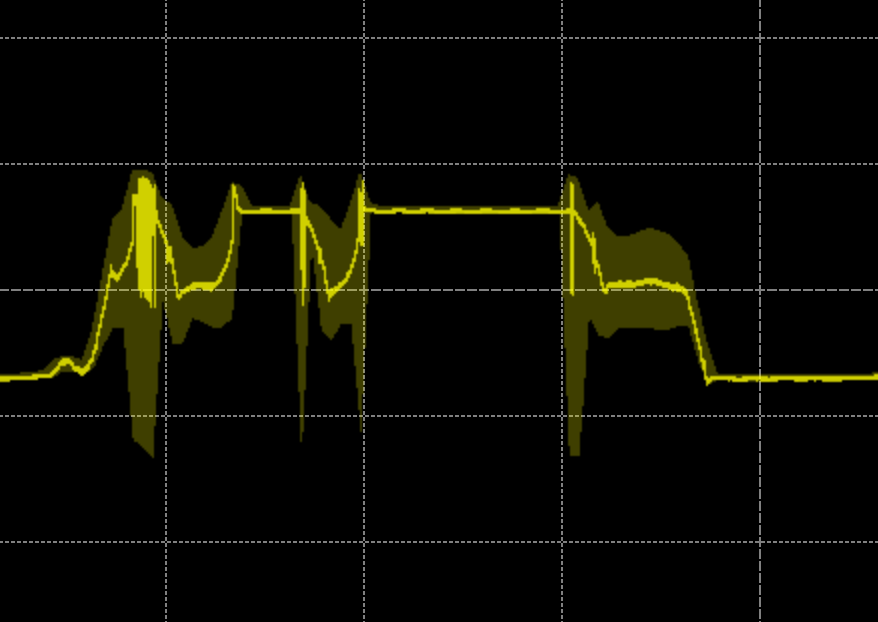
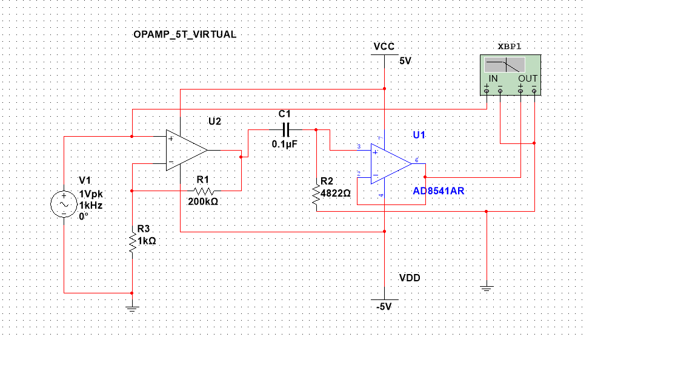
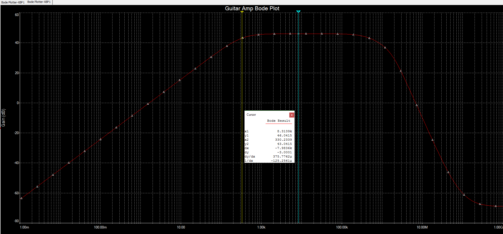

Progress
We currently have two possible designs for our circuit after figuring out that our original plan was probably a bit more complex then it needed to be. So far from our initial simulations both appear to do exactly what we need them to do. However, after spending several hours in one of the circuit labs in FPAT, we could not manage to make either schematic simulation a reality. Both circuits, despite being tweaked to perfection, simply did not produce the desired filtration around 330Hz. Instead, they didn't even appear to be filtering anything at all.
We have concluded thus far that the two main errors we may be having are:
- Usage of polarized capacitors for our RLC design. Either we were not using them correctly or we need to use non-polarized instead. However, the low capacitance of non-polarized capacitors lead us to our second main issue with resistance.
- Our resistor values, due to the low capacitance, are incredibly high (one being ~9.1MOhms) for our Band Pass Filter design. We are thinking that this may be an issue because it is causing an insane amount of extra noise in the circuit making it difficult to read our oscilloscope, let alone actually filter out everything but 330Hz.
Circuit I (RLC Design)
Circuit II (Band Pass Filter)
When we started our meeting on the 25th of April, we noticed that the original amplification circuit designed on the 21st was no longer operational. So we decided to strip the breadboard entirely, build it on a new breadboard, and retest the circuit. After about 30-60 minutes of testing, we managed to get the amplifying part of the circuit functional again with the design shown below:
 Here is also a freeze frame of the particular wave that our scope is reading from the guitar input:
Our next step was trying to recreate the filter portion of the circuit to see if we could manage to actually filter out any particular frequencies. We started by trying to build a simple high pass filter but the bode plot was flat lining from 50Hz to 1000Hz, which means that the filtration was far from functional.
We threw our filtration and amplification design into multisim to see what may be going wrong but managed to discover that in theory our design should be fully functional. We looked at the Bode Plot of our high pass filter and it was creating the perfect output with a corner frequencey incredibly close to 330Hz. Here is the tested diagram with the cooresponding Bode plot:
 As you can see our Bode plot is resonating right around 330Hz and filtering properly according to the multi sim simulation. So now we just need to figure out what may be causing the error in filtration when we actually build the circuit onto the breadboard.
After several hours and a few more team meetings, we finally were able to tweak our circuit and resolve the existing issues with the actual build that were causing it to act differently than the simulation. We now have a fully functional amplification and filtration circuit that can connect to a guitar and filter out everything but the high e note. Here is a picture of the final, operational circuit:

In the future we could definitely improve upon our circuit by adding noise cancellation so that that it's easier to distinguish the filtration of the circuit and functionality. However, the project was still overall a huge success, especially since most of us were ready accept whatever grade penalty for not having the filtration work in reality but having a working simulation. The project was definitely very informative and a huge learning experience for all of us, and thus we enjoyed it (somewhat). You may view our video of it's functionality on the Instructable Page
Meeting Minutes 4/14
Entire Team
- Created github repository for our website
- Found our team logo
- Decided on next meeting for the coming week
- Sent logo out to Dr. Lau
- Established basic roles and started talking about what we would need
- Did some basic research on the project
Meeting Minutes 4/18
Entire Team
- Started calculating resistor and capacitor values for our initial design
- We researched the design and decided to start with a Band Reject->Band Pass->Band Reject
- Drew the initial rough sketch of our circuit
- Discussed the difference between pitch and frequencey (Pitch refers to the sound)
- Parts picked out:
- Arduino Uno
- Capacitors: 104M
- 1/4" Audio Jack
- Finalized what needed to be done for next meeting and decided on the next meeting date
Laboratory Minutes 4/19
Andy Conway and Parker Householder
- Spent several hours in an FPAT circuits lab trying to build a functional prototype
- We ran into several issues when trying to build Circuit I and Circuit II (seen on the left)
- After multiple tries and multiple test builds with no success, we came to the conclusion that we might need to use higher capacitance values in the Circuit II schematic
Laboratory Minutes 4/21
Parker Householder
- Built a functional amplifier but could not get filtration working
- Filtration appeared to work on multisim but not with the actual circuit
- Amplification works via wavegen and through an actual guitar using a 1/4" audio jack
Laboratory Minutes 4/25
Entire Team
- Started the meeting off discorvering that the circuit built on the 21st was no longer operational
- We wiped the board and began rebuilding the circuit on another board
- Got the amplification portion of the circuit working with an approximate gain of 200
- After the amplification circuit was operational, we set it aside and began redesigning the filter
Laboratory Minutes 4/27
Entire Team
- We built and ran a simulation of our design in multisim and managed to get the perfect bode plot for filtering every note except for the high E string
- Knowing our simulation works, we started making several changes to test what may be the problem with our actual build
- We managed to start making progress by achieveing a slight filtration on about a 10dB scale
Final Meeting 05/01
Entire Team
- The team met to finalize the circuit
- We finally discovered a grounding issue in the circuit which upon being fixed, made our circuit work in reality rather than just in theory and simulations
- Upon completion of the circuit and project, we began to conclude by creating the instrutable page and writing in the last minutes and progress sections of the index page
- We finished by establishing the roles everyone performed throughout the project. We also determined that no role was really any less substantial than any other.
Web Development 05/02
Parker Householder
- Finished the project out strong with late night web development
- Finished the instructable page, added final minutes and Progress, and added final touches to the site overall
Final Team Participation Layout
Parker Householder
- Worked on development and updated site (took Minutes)
- Made most of the instructable page
- Designed and built the original amplification circuit
- Worked with Andy on a lot of the initial testing
Taylor Riggs
- Helped out a lot by going and getting necessary parts (like the 1/4" jack)
- Worked alongside Braden and Tianyi during main troubleshooting
- Acted as the main circuit builder/tester
- Helped facilitate communication amongst members with planning
Andy Conway
- Worked on development of the site and updated the site
- Made the first portion about pitch and frequency on the instructable page
- Helped in providing parts for troubleshooting via the IEEE store
- Worked with Parker on a lot of the initial testing
Braden Vickers
- Did most of the research behind equations and filter design
- Worked alongside Taylor and Tianyi during main troubleshooting
- Acted as the main "formula" guy which helped us fix values of parts
- Planned meetings
Tianyi Lyu
- Built our schematics in multisim for the site and made our plots
- Worked alongside Taylor and Braden during main troubleshooting
- Discovered the final error in circuit which fixed our filter issue